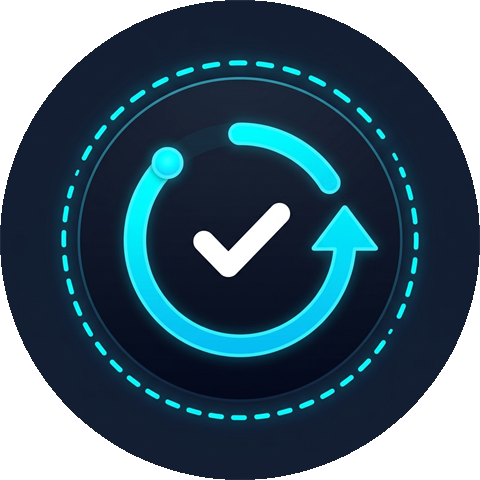
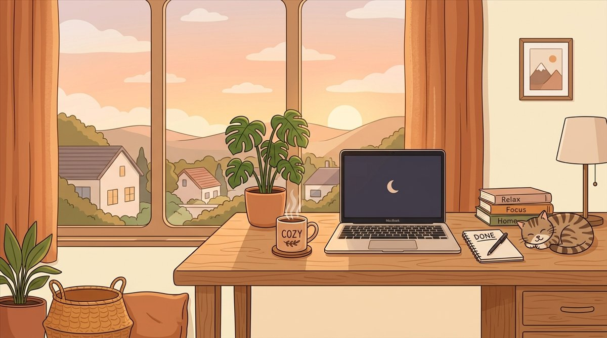
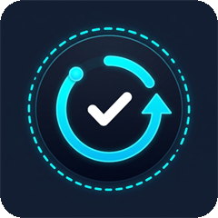

NeuroPaso no pretende que hagas todo. Pretende que hagas una cosa.
Crea tu cuenta
Correo y contraseña. Tus datos se guardan primero en el teléfono y se replican a tu cuenta cuando hay conexión.
Escribe una tarea
Por ejemplo «Preparar la presentación del lunes». Elige su categoría y la conviertes en pasos de menos de cinco minutos.
Arranca el temporizador
Cuando estés en un micro-paso, abre el Timer y pulsa iniciar. El anillo te dice cuánto queda.
Cuatro pestañas abajo y un icono de gráfico arriba a la derecha.
Aquí vive el trabajo. Las demás pantallas son apoyo para ésta.
La app enseña una única tarea activa, grande y sin distracciones. Las demás quedan a la espera, no abandonadas.
Pulsa +, escribe el título y, si quieres, una descripción. Un título claro produce mejores pasos.
Los dos funcionan. El primero es más rápido; el segundo lo controlas tú.
La app propone entre 3 y 10 pasos concretos con una estimación de minutos en cada uno.
Escribe, reordena y edita cada paso. Siempre disponible, incluso sin conexión.
| Categorías | Trabajo, Estudio, Hogar, Cuidado y General. Se eligen al crear la tarea y ordenan tus pasos por color. |
| Vincular | Desde un micro-paso puedes abrir el Timer ya poner sobre esa tarea y ese paso concretos. |
| Regenerar | Si el desglose no encaja, pídele otra versión y quédate con la que sirva. |
| Reportar | Cada micro-paso tiene una bandera para señalar contenido generado por IA que no te cuadra. |
Un temporizador pensado para que la decisión de cuándo parar ya esté tomada de antemano.
Es el punto de partida. Puedes cambiar ambas duraciones a tu gusto en esta versión.
Cada cuatro sesiones de trabajo, el descanso se alarga a 15 minutos.
Las tres primeras son cortas para mantener el ritmo; la cuarta es el punto donde el cansancio se acumula de verdad. Saltártelo con un descanso de cinco minutos es lo que hace que la cuarta hora sea casi imposible.
| Micro-paso enlazado | La app muestra el paso que estás ejecutando y de qué tarea sale. El trabajo del día aparece con nombre, no como «tiempo de concentración». |
| Sin tareas | Si no hay nada en foco, el temporizador te recuerda que vayas a Pasos a elegir una. |
| Cada sesión cuenta | Las sesiones se suman en Progreso. Con cuatro o más seguidas se construye la racha. |
Tres huecos y nada más. La restricción es el objetivo: obliga a decidir.
Lo que, si no lo haces hoy, importa de verdad.
Lo que te quitaría peso si saliera adelante.
Lo que haces cuando ya has cumplido lo anterior.
Arrastra una tarea que ya tienes en Pasos. La prioridad queda ligada a esa tarea, así que al completarla sabes que la has hecho.
Las prioridades se guardan por fecha. Mañana empiezas de cero, sin arrastrar las de hoy.
Un ritual corto que evita llegar a la medianoche con la cabeza llena de tareas abiertas.

Prioridad de mañana
Eliges qué va primero al día siguiente. Queda escrito, así que mañana no empiezas decidiendo.
Revisar el calendario
Un vistazo a lo que ya tienes comprometido mañana. Si hay colisión, ahora es el momento fácil de detectarlo.
Limpiar el escritorio
Cierras lo que está abierto de verdad: pestañas, documentos, medio. Media hora de escritorio limpio ahorra media hora de mañana.
Declaración de cierre
«Hoy terminé» queda registrado. Da por cerrada la sesión, aunque haya días que no hayas hecho casi nada.
La racha no se reinicia a cero por un día flojo: se queda donde estaba y te da un día de margen. Romperla tiene que costar un acto, no un despiste.
Se abre con el icono de gráfico de barras, arriba a la derecha.
Debajo, un gráfico de barras de los últimos siete días para ver de un vistazo qué día fue el bueno.
La app trabaja en el teléfono. Si pulsas Sincronizar, sube lo pendiente a tu cuenta.
Borra todo y cierra la sesión. Pide tu contraseña para confirmar: no basta con un botón.
| Tu correo y tu sesión | Se revoca el acceso a la cuenta. |
| Tareas y micro-pasos | En el teléfono y en la nube. |
| Estadísticas, racha y cierres | Incluido el histórico. |
| Tu configuración del temporizador | Duraciones y ajustes. |
Sin letra pequeña: esto es lo que hace la app con lo que escribes.
Cada cuenta tiene su propia base de datos local. Puedes trabajar sin conexión; la nube es una réplica, no el origen.
Cada usuario ve y escribe únicamente en su espacio. Nadie más ve tus tareas ni tus pasos.
| ¿Hay límite de tareas? | No. Puedes tener todas las tareas activas que quieras; no hay planes ni suscripciones en esta versión. |
| ¿Puedo cambiar el 25/5? | Sí. El temporizador es configurable, y el descanso largo de cada 4 sesiones se mantiene. |
| ¿Funciona sin internet? | Sí. Todo se guarda en el teléfono. Solo se necesita conexión para sincronizar y para el desglose con IA. |
| ¿Cómo entro con Google? | De momento, solo con correo y contraseña. El acceso con Google está deshabilitado en esta versión. |
| ¿Los pasos los hace la IA siempre? | No necesariamente. Si la IA no responde, la app genera pasos genéricos por palabras clave sin avisar. Si te parecen demasiado correctos y genéricos, es probable que no los haya generado el modelo. |
| ¿Qué pasa si borro la cuenta? | Se elimina todo de forma permanente, en el teléfono y en la nube, y se revoca tu sesión. No hay vuelta atrás. |
